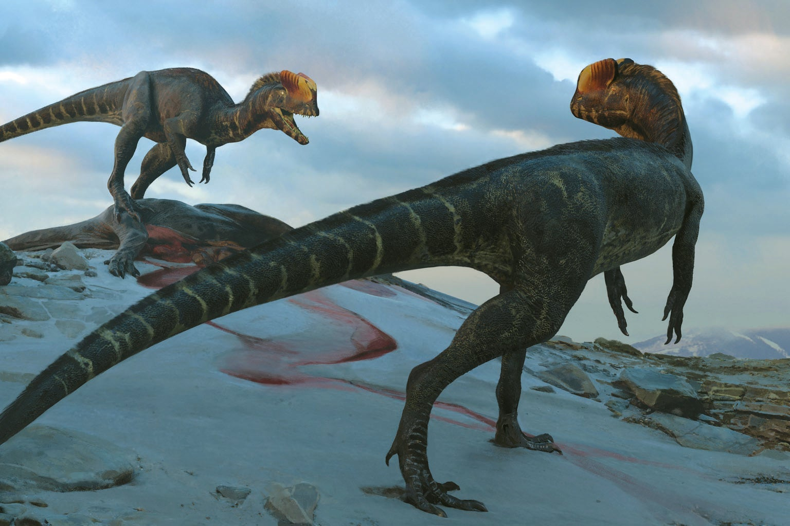

Дилофозавр — один из самых узнаваемых хищников юрского периода. Он был быстрым, опасным и имел два огромных гребня на голове. Ты думаешь что он Плевался ядом? Так тебя облапошили, мой друг. Он и без яда мог разорвать тебя в клочья.